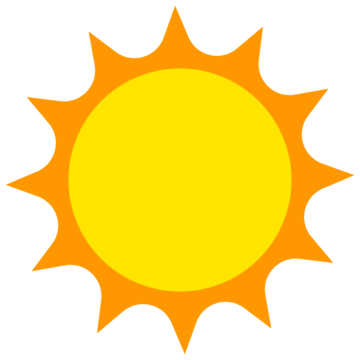
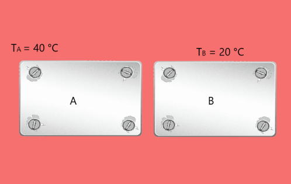
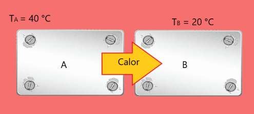
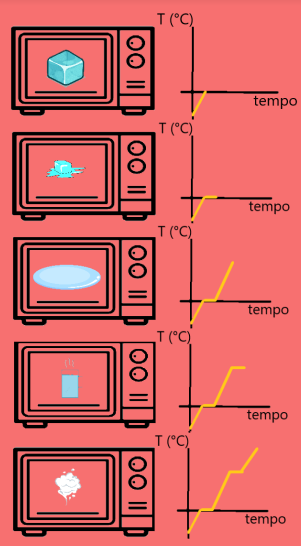
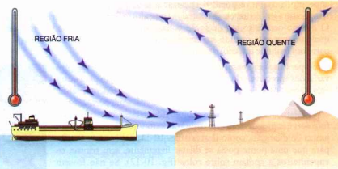
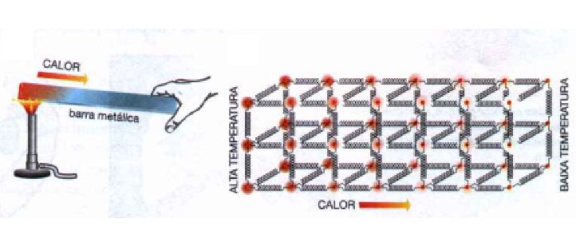
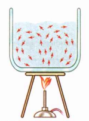
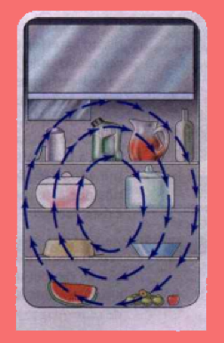
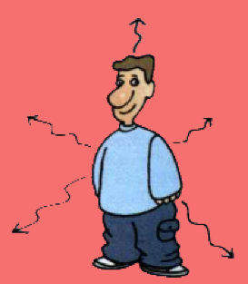

Calorimetria

Calorimetria é o ramo da física que estuda os fenômenos relacionados ao calor, à troca de calor entre corpos e às mudanças de temperatura ou estado físico que essas trocas causam. Em resumo, a calorimetria investiga como o calor é transferido entre os corpos e como essa transferência afeta as propriedades desses corpos.
Calor e Estados Físicos da Matéria
Introdução ao calor

Quando temos duas placas com temperaturas diferentes, como na figura ao lado, a placa A tem uma temperatura maior do que a placa B. Ao colocá-las em contato por algum tempo, observamos que a placa A transfere energia para a placa B, resultando em um aumento da temperatura de B e uma diminuição da temperatura de A.
Esse processo de troca de energia entre as placas continua até que ambas alcancem a mesma temperatura, um fenômeno conhecido como equilíbrio térmico. Neste estado, como não há mais diferença de temperatura entre os corpos, não ocorre mais transferência de energia. Esta energia em transição é o que chamamos de calor.

No início, as moléculas da placa A, por estarem a uma temperatura mais alta, possuem mais energia, ou seja, estão mais agitadas que as moléculas da placa B. Conforme a troca de calor ocorre, as moléculas da placa A perdem energia (diminuindo sua agitação), enquanto as moléculas da placa B ganham energia (aumentando sua agitação). Dessa forma, o calor é transferido do corpo mais quente para o corpo mais frio de maneira espontânea.
Calor (Q) - é a energia transferida de um corpo de maior temperatura para um corpo de menor temperatura. Essa transferência de energia ocorre até que as temperaturas se igualem, ou seja, até o equilíbrio térmico.
Importante notar que o calor é a energia em trânsito. Isso significa que não faz sentido dizer que um corpo "tem calor"; o que ele tem é energia interna. O calor é apenas a energia transferida de um corpo para outro devido à diferença de temperatura.
Nota: Embora o calor geralmente flua do quente para o frio, é possível fazer o contrário (como em refrigeradores e ar-condicionados), mas isso requer a realização de trabalho externo para forçar essa transferência de energia.
Estados físicos da matéria

Na natureza, normalmente encontramos a matéria em três estados físicos, irei descrever cada uma delas
Sólido- No estado sólido, as moléculas estão com a menor agitação possível, o que permite que as forças de ligação entre elas sejam fortes o suficiente para mantê-las "presas" em posições fixas, como se estivessem ligadas por molas. Embora haja um pouco de movimento, elas permanecem, em média, no mesmo lugar. Por isso, sólidos têm forma e volume definidos.
Líquido- No estado líquido, as moléculas estão mais agitadas e conseguem se mover, mas ainda sofrem influência das forças de ligação. Essa maior mobilidade permite que os líquidos escoem e tomem a forma do recipiente em que estão, porém, seu volume permanece definido.
Gasoso- No estado gasoso, as moléculas estão extremamente agitadas, a ponto de as forças de ligação entre elas se tornarem quase inexistentes. Por isso, os gases têm volume e forma variáveis, preenchendo completamente o recipiente onde estão.

As mudanças de fase descrevem as transformações que a matéria pode passar de um estado físico para outro. Aqui estão os principais tipos de mudança de fase e como elas funcionam:
Fusão- A fusão é a passagem do estado sólido para o líquido. Ocorre quando a temperatura aumenta até um ponto em que as moléculas se agitam o suficiente para superar as forças que as mantêm no estado sólido. Um exemplo é o gelo derretendo em água.
Vaporização- A vaporização é a passagem do estado líquido para o gasoso. Ocorre quando a temperatura aumenta a ponto de as moléculas do líquido conseguirem escapar e se espalhar como gás. Este processo inclui duas formas: evaporação (que ocorre na superfície do líquido) e ebulição (que ocorre no líquido todo).
Condensação/liquefação- A condensação ou liquefação é a passagem do estado gasoso para o líquido. Ocorre quando a temperatura do gás diminui e as moléculas perdem energia, voltando a se agrupar em forma líquida.
Solidificação- A solidificação é a passagem do estado líquido para o sólido, ocorrendo quando a temperatura diminui, fazendo com que as moléculas percam energia e se aproximem, formando uma estrutura sólida.
Sublimação- A sublimação é a passagem direta do estado sólido para o gasoso, sem passar pelo estado líquido. Ocorre quando a temperatura e pressão permitem essa transformação. O processo inverso também pode ocorrer, quando um gás se transforma diretamente em sólido.
A pressão também desempenha um papel importante nas mudanças de fase. Quanto maior a pressão, mais difícil é para as moléculas se separarem e mudarem de estado. Por exemplo, a ebulição de um líquido se torna mais difícil com alta pressão, pois as moléculas precisam de mais energia para escapar da superfície do líquido e se tornarem gás.
Durante essas mudanças, o corpo absorve calor (na fusão e vaporização) ou libera calor (na condensação e solidificação). Isso ocorre porque as moléculas precisam de mais ou menos energia para mudar de um estado físico para outro.
Calor Sensível e Calor Latente
Calor sensível X Calor latente

Suponha a 1ª situação da figura ao lado, em que há um pedaço de gelo dentro de um forno. A temperatura inicial do gelo é de -10 °C e a pressão atmosférica no local é de 1 atm. Conforme o gelo recebe calor do forno, sua temperatura aumenta até atingir 0 °C, momento em que ocorre o processo de fusão (2ª situação). Note que, enquanto uma poça de água começa a se formar ao redor do gelo, a temperatura do sistema não aumenta. Isso ocorre porque, antes de atingir o ponto de fusão, o calor transferido era usado para aumentar a agitação das moléculas. No entanto, ao chegar ao ponto de fusão, as moléculas passam a "focar" o calor recebido exclusivamente na mudança de estado físico, ou seja, em se afastar umas das outras e superar as forças de atração que as mantêm unidas no estado sólido. Por esse motivo, a temperatura permanece constante até que todo o gelo tenha se transformado em água.
Agora, suponha que a água continue a ser aquecida na 3ª situação. Na 4ª situação, a água atinge 100 °C, ponto de ebulição. Novamente, as moléculas param de usar o calor para aumentar a temperatura e, em vez disso, o utilizam para mudar de fase, ou seja, para passar do estado líquido para o estado gasoso. Assim como no processo de fusão, a temperatura se mantém constante até que toda a água tenha se transformado em vapor. Somente após essa mudança completa, as moléculas voltam a usar o calor recebido para aumentar sua agitação, o que ocorre na 5ª situação.
Processos como esse ocorrem para qualquer substância pura (em Química, você verá que as misturas se comportam de forma diferente).
Atenção: Quando um corpo qualquer troca calor, esse calor pode ser utilizado de duas formas (que não acontecem simultaneamente):
O calor pode ser usado para aumentar a agitação das moléculas, ou seja, para variar a temperatura. Nesse caso, o calor recebido é chamado de calor sensível;
O calor pode ser usado para mudar o estado físico do material, como de sólido para líquido ou de líquido para gás. Nesse caso, o calor recebido é chamado de calor latente.
Calor sensível
Como vimos, o calor sensível é o calor utilizado para variar a temperatura de uma substância. Para calcular o calor sensível, usamos a seguinte equação:
$$ Q = mcΔT $$
Onde:
Q é a quantidade de calor
m é a massa da substância
c é o calor específico da substância, que varia conforme o material e o estado físico
ΔT é a variação de temperatura, ou seja, a diferença entre a temperatura final e a inicial
É importante lembrar que essa equação só pode ser usada quando estamos tratando de calor sensível, ou seja, quando o calor está sendo utilizado para aumentar ou diminuir a temperatura, e não para mudanças de estado físico.
O que é calor específico?
O calor específico é uma grandeza medida, geralmente em laboratório, que indica a dificuldade de uma substância em variar sua temperatura. Quanto maior o calor específico de uma substância, mais difícil será alterar sua temperatura ao fornecer calor.
Exemplo:
Calor específico da água = 1 cal/g°C
Calor específico da areia = 0,3 cal/g°C

Veja a figura ao lado: em uma praia ensolarada, tanto a areia quanto o mar recebem calor do Sol, mas percebe-se uma diferença clara na temperatura das duas substâncias. Como a areia tem um calor específico menor que o da água, sua temperatura varia mais rapidamente, e ela aquece rapidamente, aquecendo também o ar logo acima dela. Já a água, devido ao seu alto calor específico, demora mais para aquecer, resultando em uma temperatura menor em relação à areia. Por isso, a região de ar acima do mar é mais fria.
Como as regiões de ar acima da água e da areia têm temperaturas diferentes, o ar frio, que é mais denso (porque, com o resfriamento, seu volume diminui, aumentando sua densidade), "invade" a região de ar quente acima da areia, empurrando o ar quente para cima. Esse fenômeno é conhecido como brisa marinha.
Se fosse noite na praia, o processo ocorreria de maneira inversa.
Agora, vamos pensar nas unidades usadas na fórmula mencionada anteriormente.
Calor (Q) é uma forma de energia, medida no Sistema Internacional (SI) em Joules (J), mas também pode ser medido em calorias (cal). Sabemos que:
$$ 1 cal ≅ 4,2 J $$
Temperatura pode ser medida em Celsius (°C), Fahrenheit (°F) ou, no SI, em Kelvin (K).
Massa pode ser medida em gramas (g) ou quilogramas (kg) no SI.
A unidade a ser usada depende do calor específico, que pode ser dado em diferentes formas. Por exemplo:
O calor específico da água = 1 cal/g°C, onde o calor é medido em calorias (cal), a massa em gramas (g), e a temperatura em graus Celsius (°C). Se o calor específico for dado em J/kg°C, o calor deve ser medido em joules (J), a massa em quilogramas (kg), e a temperatura em °C.
Nota: 1 cal/g°C significa que é necessário fornecer 1 caloria para aumentar a temperatura de 1 grama da substância em 1 °C.
Calor latente
Lembrando que o calor latente é o calor utilizado para a mudança de estado físico (que ocorre sem variação de temperatura para substâncias puras). Para calcular, usamos a seguinte equação:
$$ Q = mL $$
Onde:
Q é a quantidade de calor;
m é a massa que muda de estado (não necessariamente a massa total);
L é o calor latente da mudança de estado.
É importante destacar que essa equação só é usada durante a mudança de estado físico. O calor latente representa a dificuldade de realizar essa mudança: quanto maior o valor de
L, mais difícil é mudar o estado físico da substância.
Por exemplo, no caso da água:
Calor latente de fusão = 80 cal/g (isso significa que, para passar a água do estado sólido para o líquido, é necessário fornecer 80 calorias para cada grama de água derreter);
Calor latente de vaporização = 540 cal/g (isso significa que, para transformar a água do estado líquido para o gasoso, é necessário fornecer 540 calorias para vaporizar cada grama).
Importante - cuidado com os sinais
Quando um objeto recebe calor, dizemos que o calor é positivo;
Quando um objeto libera calor (ou seja, perde calor), o calor é negativo.
Isso significa que, no calor latente, se a água estiver passando pelo processo de condensação (de vapor para líquido), o calor latente de condensação será o mesmo valor do calor latente de vaporização, mas negativo. Da mesma forma, se a água estiver sofrendo solidificação (de líquido para sólido), o calor latente de solidificação será igual ao calor latente de fusão, mas negativo.
Essa convenção ocorre porque, em ambos os casos, há uma liberação de calor. Portanto, podemos escrever a fórmula de forma mais completa:
$$ Q = ±mL $$
O sinal será positivo se o corpo receber calor e negativo se o corpo liberar calor.
Trocas de Calor: Conceitos e Definições
Capacidade térmica: conceito
Considere a pergunta: "O que esquenta mais rápido, a água ou o ferro?" Sabemos que o calor específico da água é 1 cal/g°C e o do ferro é 0,2 cal/g°C, o que pode levar a pensar que o ferro esquenta mais rápido. No entanto, essa afirmação nem sempre é verdadeira, pois a massa das substâncias também influencia na dificuldade de variar a temperatura quando fornecemos calor.
O calor específico indica a dificuldade de elevar a temperatura ao fornecer calor para cada grama de uma substância. Porém, na pergunta acima, não podemos determinar a resposta apenas com o calor específico, sem saber as massas de água e ferro. Por isso, é necessário introduzir o conceito de capacidade térmica.
A capacidade térmica (C) é a quantidade de calor necessária para variar a temperatura de um corpo, independentemente da sua massa. Podemos calcular a capacidade térmica com a seguinte fórmula:
$$ C = mc $$
Onde:
C é a capacidade térmica;
m é a massa da substância;
c é o calor específico.
Para determinar qual substância esquenta com mais dificuldade, o ideal é comparar a capacidade térmica de cada uma, em vez de apenas o calor específico. A capacidade térmica leva em conta tanto a massa quanto o calor específico, o que proporciona uma análise mais precisa.
Troca de calor em sistemas isolados

Imagine duas placas em contato (como mostrado na 1ª situação da figura) e considere que elas estão em um sistema isolado, ou seja, não trocam calor com o ambiente (sem interferência do ar, por exemplo). A temperatura inicial da placa A é de 40 °C, e da placa B é de 20 °C. Isso indica que haverá uma transferência de calor da placa A para a placa B. Como resultado, a temperatura da placa A vai diminuir, enquanto a da placa B vai aumentar, até que ambas atinjam a mesma temperatura, ou seja, o equilíbrio térmico (como mostrado na 2ª situação).
Como o sistema é isolado, todo o calor perdido pela placa A é ganho pela placa B. Assim, podemos dizer que:
$$ Q_A = Q_B $$
No entanto, é importante lembrar a convenção dos sinais. Se a placa A está perdendo calor, seu valor de QA
é negativo, e se a placa B está ganhando calor, seu QB
é positivo. Dessa forma, podemos reescrever a equação como:
$$ -Q_A = Q_B $$
Ou, de maneira simplificada:
$$ 0 = Q_A + Q_B $$
Isso significa que, em um sistema isolado e em equilíbrio térmico, a soma das trocas de calor entre todos os corpos em contato é igual a zero.
Qual a temperatura de equilíbrio?
Um pote contém 100 g de água a uma temperatura de 20 °C. Uma pessoa adiciona um pedaço de ferro de 200 g com uma temperatura inicial de 125 °C. Sabendo que este sistema água-ferro está termicamente isolado, e utilizando os calores específicos da água (1 cal/g°C) e do ferro (0,2 cal/g°C), precisamos determinar a temperatura de equilíbrio entre os dois corpos.
Para resolver esse exercício, devemos lembrar que o pote funciona como um calorímetro, que é um recipiente usado para colocar dois corpos a temperaturas diferentes e analisar a transferência de calor entre eles, garantindo isolamento térmico.
Após algum tempo, o ferro irá esfriar, e a água irá aquecer até que ambos atinjam a mesma temperatura de equilíbrio, que queremos descobrir.
Em um sistema isolado em equilíbrio térmico, a soma do calor trocado pelas substâncias é igual a zero. Vamos denotar Q1
como a troca de calor da água e Q2
como a troca de calor do ferro. Portanto, temos:
$$ Q_1 + Q_2 = 0 $$
Utilizando a fórmula para calcular o calor sensível, podemos substituí-la na equação:
$$ m_1 c_1 ΔT_1 + m_2 c_2 ΔT_2 = 0$$
Aqui ΔT, representa a variação de temperatura final em relação à temperatura inicial. A temperatura final (
Teq) de ambos os corpos será a mesma, pois no final eles atingem o equilíbrio térmico. Assim, podemos reescrever a equação como:
$$ m_1 c_1 (T_{eq} - T_1) + m_2 c_2 (T_{eq} - T_2) = 0 $$
Agora, vamos substituir os valores conhecidos. Aqui, as variáveis 1 e 2 se referem à água e ao ferro, respectivamente:
$$ m_1 = 100 g $$ $$ c_1 = 1cal/g°C$$ $$T_1 = 20°C$$ $$m_2=200g$$ $$c_2=0,2cal/g°C$$ $$T_2=125°C$$
Substituindo os valores na equação:
$$100 \cdot 1(T_{eq} - 20) + 200 \cdot 0,2(T_{eq} - 125) = 0$$
Agora, vamos calcular Teq:
$$100(T_{eq} - 20) + 40(T_{eq} - 125) = 0$$
Expandindo a equação:
$$100T_{eq} - 2000 + 40T_{eq} - 5000 = 0$$
Somando os termos semelhantes:
$$140T_{eq} - 7000 = 0$$
Isolando Teq:
$$140T_{eq} = 7000$$
Dividindo ambos os lados por 140:
$$T_{eq} = \frac {7000}{140}$$
$$T_{eq} = 50 °C$$
Portanto, a temperatura de equilíbrio entre a água e o ferro será de 50 °C.
Transferência de Calor: Mecanismos
Condução
Agora que entendemos o que é calor e como calculá-lo, precisamos falar sobre como ele é transferido. A transferência de calor sempre ocorre devido a uma diferença de temperatura, e existem várias maneiras de isso acontecer. Vamos discutir uma delas.

Uma forma de transferência de calor é por condução. Para entender melhor, imagine uma pessoa segurando uma barra de metal, enquanto a outra extremidade está sendo aquecida por uma chama. As moléculas da barra que estão mais próximas do fogo começam a vibrar mais rápido, enquanto as moléculas do lado onde a pessoa está segurando ainda estão mais "tranquilas", com menos agitação.
À medida que as moléculas aquecidas vibram mais, elas transferem essa energia para as moléculas vizinhas, que também começam a vibrar mais, e assim por diante. Esse processo vai acontecendo ao longo da barra, de molécula em molécula. É como uma reação em cadeia: moléculas agitadas "batem" nas outras, que também começam a se agitar. Isso significa que o calor está sendo transferido gradualmente ao longo da barra.
Uma forma simples de entender esse processo é imaginar que as moléculas estão ligadas por molas. Quando uma molécula vibra, a mola transmite essa vibração para a molécula vizinha, e assim sucessivamente.
Portanto, na condução, o calor se propaga por meio de colisões entre moléculas. Para que ocorra condução, é necessário haver contato direto entre os corpos. Por exemplo, se encostarmos um bloco A em um bloco B, ocorrerá condução de calor entre eles; se não houver contato, não haverá condução.
Observação: Os metais são bons condutores de calor porque possuem elétrons livres. Esses elétrons ajudam a transferir o calor, além da colisão das moléculas. Por isso, os metais são bons condutores térmicos, além de serem bons condutores elétricos.
Agora, pense em um objeto de ferro e outro de plástico, ambos à mesma temperatura ambiente. Se você tocar os dois objetos, um com cada mão, vai sentir o ferro mais frio do que o plástico. Isso acontece porque o ferro é um bom condutor térmico. Como a sua mão está mais quente, o ferro "rouba" o calor da sua mão mais rapidamente do que o plástico.
Quando falamos de condução, também introduzimos o conceito de fluxo de calor, que é a quantidade de calor que passa por um material a cada segundo. Usando novamente o exemplo da barra de metal, o fluxo de calor seria a quantidade de calor que passou de uma extremidade da barra para a outra em um determinado tempo. Ele pode ser calculado com a fórmula:
$$Φ = \frac {Q}{Δt}$$
Onde:
Φ é o fluxo de calor
Q é a quantidade de calor
Δt é o intervalo de tempo
Outra forma de calcular o fluxo de calor é por meio da Lei de Fourier, que nos dá a equação:

$$Φ = \frac {kAΔT}{L}$$
Onde:
Φ é o fluxo de calor;
k é a condutividade térmica do material (materiais com maior k conduzem calor melhor, como os metais);
A é a área da secção transversal pela qual o calor está sendo transferido (basicamente, a área de contato) (quanto maior a área, mais calor pode passar);
L é o comprimento do material;
ΔT é a diferença de temperatura entre as extremidades do material.
Essa equação ajuda a entender como diferentes fatores, como a área e o comprimento do material, afetam a quantidade de calor que pode ser transferida por condução.
Convecção

Imagine uma panela com água sendo aquecida pelo fogo, como mostrado na figura ao lado. A base da panela está diretamente em contato com a chama, fazendo com que as moléculas do metal dessa região se agitem mais. Essa agitação é transferida para a água, que começa a aquecer. Quando a água na parte de baixo da panela esquenta, ela se expande, tornando-se menos densa. Por ser menos densa, essa água quente sobe para a parte superior da panela. Ao mesmo tempo, a água mais fria que estava em cima desce, ocupando o lugar da água quente.
Esse movimento contínuo de troca entre água quente que sobe e água fria que desce se repete até que toda a água esteja quente. Podemos dizer que as moléculas mais agitadas da água na parte inferior sobem, enquanto as moléculas menos agitadas da parte superior descem, se aquecendo também.
Esse processo é chamado de convecção, e ele ocorre em fluidos (líquidos e gases) devido à diferença de densidade causada pela variação de temperatura. Em sólidos, a convecção não ocorre porque as moléculas estão muito firmemente ligadas umas às outras, o que impede o movimento livre.

Um exemplo comum de convecção é a formação dos ventos. O calor do Sol aquece a superfície da Terra, e isso aquece o ar próximo à superfície. Esse ar quente sobe porque é menos denso, e o ar mais frio e denso desce para ocupar o lugar dele. Esse ciclo contínuo de movimento do ar é o que chamamos de vento.
Outro exemplo é o funcionamento de uma geladeira. O ar mais frio, vindo da parte superior (o refrigerador), é mais denso, então ele desce para a parte inferior. Ao mesmo tempo, o ar mais quente da parte inferior sobe para ser resfriado. Esse movimento cíclico do ar dentro da geladeira é um exemplo clássico de corrente de convecção.
Esses movimentos de fluidos em ciclo, seja no ar ou na água, são chamados de correntes de convecção.
Irradiação, efeito estufa e garrafa térmica

Agora, falta falar sobre o último método de transferência de calor: a irradiação. Esse processo baseia-se no fato de que todo corpo emite calor na forma de ondas eletromagnéticas. A irradiação é o único método de transferência de calor que pode ocorrer no vácuo. Isso porque, para que haja condução e convecção, é necessário que existam moléculas para transmitir o calor, o que não acontece no vácuo. Já na irradiação, como as ondas eletromagnéticas se propagam mesmo no vácuo, é assim que o calor do Sol chega à Terra.
Lembre-se de que as ondas eletromagnéticas têm diferentes características, dependendo da quantidade de energia que elas transportam, ou seja, de sua frequência. Por exemplo, ondas de rádio têm frequência mais baixa (e carregam menos energia) que os raios X.
No caso da transferência de calor, o tipo de onda eletromagnética emitida depende da temperatura do corpo. Em geral, os objetos na Terra emitem calor na forma de infravermelho (é assim que as câmeras de visão noturna detectam calor).
Quando a temperatura de um corpo aumenta muito, ele começa a mudar de cor. Isso acontece porque, com o aumento da temperatura, o corpo passa a emitir irradiação visível, como uma barra de ferro que, quando muito quente, fica vermelha.
O Sol, sendo extremamente quente, emite não só luz visível, mas também raios ultravioleta. Isso está relacionado ao fenômeno do efeito estufa. A luz visível do Sol atravessa os gases da atmosfera e aquece a superfície da Terra. Em resposta, a Terra emite calor na forma de infravermelho, mas certos gases na atmosfera, como o dióxido de carbono, retêm essas ondas infravermelhas, impedindo que elas escapem para o espaço, o que faz o calor voltar para a superfície. O mesmo princípio pode ser observado em uma estufa de vidro.

Outro exemplo importante é o funcionamento de uma garrafa térmica (ou frasco de Dewar). Observe a figura ao lado, onde há uma garrafa térmica com líquido dentro. O objetivo da garrafa térmica é minimizar ao máximo a perda ou ganho de calor, mantendo a temperatura do líquido constante.
Para isso, entre a parede interna e a externa da garrafa, existe vácuo (ou, às vezes, um material isolante), o que impede a transferência de calor por condução e convecção. Além disso, as paredes internas são espelhadas, refletindo as ondas eletromagnéticas, o que reduz a transferência de calor por irradiação. Embora o sistema não seja perfeito — já que a garrafa precisa de uma tampa para ser aberta —, ele é bastante eficiente em manter a temperatura dos líquidos.
Dilatação Térmica
Dilatação dos sólidos
Imagine um pote de vidro com uma tampa de metal muito apertada, difícil de abrir com as mãos. Uma solução comum é jogar água quente no pote para facilitar a abertura. Mas por que isso funciona?
Isso acontece devido à dilatação térmica, onde o material da tampa dilata mais do que o vidro do pote. Mas o que é dilatação térmica? É o fenômeno que faz os materiais mudarem de volume conforme a temperatura muda. Quanto mais quente o material, mais ele se expande.
Existem três tipos de dilatação que podemos analisar:
 Dilatação linear: Aqui, analisamos a dilatação em apenas uma direção (por exemplo, o comprimento), enquanto as outras dimensões são desprezíveis (como em um bastão de ferro). A fórmula usada é:
$$ ΔL = L_0αΔT $$
Dilatação linear: Aqui, analisamos a dilatação em apenas uma direção (por exemplo, o comprimento), enquanto as outras dimensões são desprezíveis (como em um bastão de ferro). A fórmula usada é:
$$ ΔL = L_0αΔT $$
Onde:
ΔL (m) é a variação do comprimento;
L0 (m) é o comprimento inicial;
α (°C-1 ou K-1) é o coeficiente de dilatação linear, uma constante característica de cada material;
ΔT (em °C ou K) é a variação de temperatura.
 Dilatação superficial: Aqui, analisamos a dilatação em duas direções (comprimento e largura, ou seja, a área), ignorando a terceira dimensão (como em uma placa de ferro). A fórmula usada é:
$$ ΔA = A_0βΔT $$
Dilatação superficial: Aqui, analisamos a dilatação em duas direções (comprimento e largura, ou seja, a área), ignorando a terceira dimensão (como em uma placa de ferro). A fórmula usada é:
$$ ΔA = A_0βΔT $$
Onde:
ΔA (m2) é a variação da área;
A0 (m2) é a área inicial;
β (°C-1 ou K-1) é o coeficiente de dilatação superficial, que é o dobro do coeficiente linear, ou seja:
$$ β = 2α $$
ΔT (em °C ou K) é a variação de temperatura.
Dilatação volumétrica: Aqui, consideramos a dilatação em todas as três dimensões (altura, largura e profundidade, ou seja, o volume). É a análise mais completa para dilatação. A fórmula é:
$$ ΔV = V_0γΔT $$
Onde:
ΔV (m3) é a variação do volume;
V0 (m3) é o volume inicial;
γ (°C-1 ou K-1) é o coeficiente de dilatação volumétrica, que é o triplo do coeficiente linear, ou seja:
$$ γ = 3α $$
ΔT (em °C ou K) é a variação de temperatura.
Dilatação por cavidades

Observe a figura ao lado. Nesse caso, temos um objeto com um orifício que se dilata. A pergunta que surge é: "O que acontece com o orifício durante a dilatação?". A resposta é simples: o orifício se expande da mesma forma que o resto do objeto. É como se o orifício fosse feito do mesmo material que o objeto, ou seja, ele também dilata. Isso vale tanto para a dilatação linear quanto para a dilatação volumétrica.
Por que a dilatação ocorre?
A dilatação acontece porque, ao aumentar a temperatura de um corpo, suas moléculas começam a se agitar mais intensamente. Essa agitação faz com que a distância média entre as moléculas aumente. Quanto maior a agitação molecular, mais espaço elas ocupam, resultando em um aumento no volume do corpo.
Dilatação dos líquidos
Dilatação anômala da água
Quando dizemos que a água possui uma dilatação anômala, estamos afirmando que o comportamento da água, em relação à dilatação, é diferente das outras substâncias. Por exemplo, você já deve ter notado que, em um ambiente frio, a superfície de um lago pode congelar, enquanto a água no fundo permanece líquida. Esse fenômeno ocorre devido à dilatação anômala da água.

Normalmente, quando uma substância aquece, ela se expande, mas a água não segue essa regra entre 0°C e 4°C. Nesse intervalo de temperatura, ao invés de se expandir, a água se contrai ao ser aquecida. Somente após os 4°C ela volta a se expandir normalmente. Por causa disso, a água atinge sua densidade máxima quando está a 4°C, já que seu volume é o menor nesse ponto.
No exemplo do lago congelado, a água a 0°C congela e se transforma em gelo. Porém, o gelo é menos denso que a água líquida (como a que estaria a 4°C, onde a densidade é maior devido à dilatação anômala). Por isso, o gelo flutua na superfície do lago.
Dilatação aparente

Observe a figura ao lado. Quando aquecemos um copo de água, tanto o líquido quanto o copo se dilatam. Embora pareça que a água subiu, essa dilatação que vemos é apenas aparente, pois o copo também se dilatou.
A dilatação real considera tanto a variação do volume do líquido quanto a do recipiente. Podemos expressar isso com a fórmula:
$$ ΔV_{real} = ΔV_{aparente} + ΔV_{recipiente} $$
Nota: A dilatação do líquido (como a dilatação aparente em um copo de água, por exemplo) segue as mesmas leis que estudamos para os sólidos.
Diagrama de Fases
Diagrama de fases
Lembre-se de que tanto a temperatura quanto a pressão influenciam as mudanças de estado físico. Por exemplo, para saber se a água está em estado de vapor a 90°C, é necessário conhecer a pressão à qual a água está submetida.

Agora, observe a figura ao lado. Ela mostra um diagrama de fases, que é um gráfico que relaciona pressão e temperatura. Para substâncias puras, o diagrama tem um formato semelhante ao da figura. Cada curva representa uma mudança de estado físico, enquanto as regiões entre as curvas indicam o estado da substância (sólido, líquido ou gasoso). Confira o gráfico para identificar em qual estado a substância está.
Ao alterarmos a pressão e a temperatura, podemos determinar o estado físico da substância e qual foi a mudança de fase (por exemplo, o ponto 5 no gráfico representa a sublimação, o ponto 1 representa a fusão, e o ponto 3 indica a vaporização).
Se um ponto estiver localizado exatamente em uma das curvas, isso significa que parte da substância está em um estado e outra parte em outro. Por exemplo, se o ponto estiver na curva vermelha, a substância estará em parte líquida e em parte vapor.
Também pode acontecer de um ponto estar na junção das três curvas. Nesse caso, a substância estará simultaneamente nos estados sólido, líquido e gasoso, em uma condição chamada de ponto triplo, que ocorre a uma pressão e temperatura específicas.
Agora, observe um detalhe importante: a linha preta que separa o sólido do líquido, no gráfico, se estende indefinidamente, mas a linha que separa o líquido do vapor tem um fim. Esse ponto final é chamado de ponto crítico.
Se aumentarmos a temperatura de um líquido de forma extrema, sem transformá-lo em vapor devido à alta pressão, chega um momento em que as moléculas do líquido ficam tão agitadas que ele começa a se comportar como um gás. Nesse ponto, não conseguimos mais distinguir uma superfície definida no líquido. A temperatura crítica é o valor em que isso acontece, fazendo com que o líquido se comporte como gás, independentemente da pressão.
Nota: Antes da temperatura crítica, chamamos a substância no estado gasoso de vapor. Após a temperatura crítica, chamamos de gás.